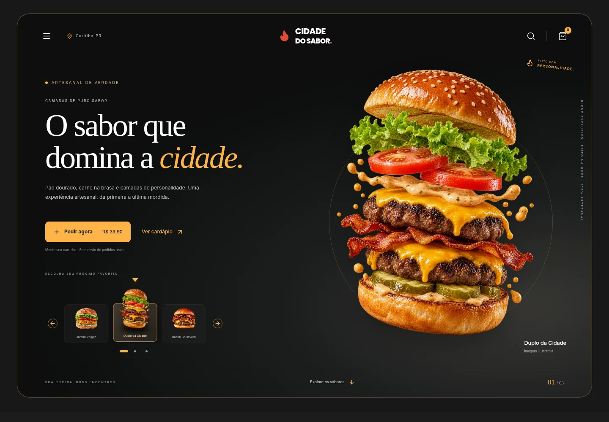

Identidade que se reconhece
Uma linguagem visual alinhada à sua marca, ao seu público e ao que você quer comunicar.
ESTÚDIO DIGITAL. IDEIAS EM MOVIMENTO.
Criamos sites modernos, rápidos e responsivos para transformar ideias em experiências digitais profissionais.
Para empresas, profissionais autônomos e pessoas físicas.
MAIS DO QUE ESTAR ONLINE
Design, conteúdo e navegação trabalhando juntos para apresentar o que torna sua ideia única.
Uma linguagem visual alinhada à sua marca, ao seu público e ao que você quer comunicar.
Informações bem organizadas e caminhos simples para conhecer seu trabalho e entrar em contato.
Layouts responsivos, cuidado com o desempenho e atenção à acessibilidade desde a estrutura.
O QUE PODEMOS CRIAR
Sites pensados a partir do seu contexto. Sem fórmulas prontas ou complexidade desnecessária.
Uma página com mensagem clara e chamada para ação, ideal para apresentar um serviço, uma ideia ou uma campanha.
Quero uma landing pageUm espaço para apresentar sua empresa, seus serviços e sua história com organização e identidade própria.
Quero um site institucionalSeus trabalhos, suas habilidades e sua forma de criar em uma apresentação que valoriza cada detalhe.
Quero apresentar meu trabalhoProdutos ou serviços organizados para facilitar a consulta e iniciar uma conversa sobre o que interessa.
Quero um catálogo digitalLOJAS VIRTUAIS · SOB CONSULTA
Avaliamos catálogo, funcionalidades e viabilidade antes de definir o escopo. Pagamentos, frete e outras integrações dependem dessa análise.
DO CONCEITO À INTERAÇÃO
Dois conceitos, duas identidades. Explore os estudos de caso e as interfaces desenvolvidas para portfólio, sem clientes ou operações reais.

PROJETO CONCEITUAL · SEM CLIENTE REAL
Da identidade LT Axis à experiência de compra: um e-commerce conceitual de streetwear com catálogo, sacola, checkout e painel demonstrativos.
Conhecer projeto Ver código no GitHub
PROJETO CONCEITUAL · SEM CLIENTE REAL
Uma hamburgueria fictícia que conecta identidade gastronômica, cardápio interativo e operação demonstrativa em uma mesma experiência digital.
Conhecer projeto Ver código no GitHubProjetos conceituais de portfólio. Os estudos de caso apresentam interfaces existentes e explicam o que é demonstrativo em cada experiência.
Demonstrações de estudo preservadas no portfólio. Não são uma oferta de serviços de automação ou infraestrutura.
DEMONSTRAÇÃO FICTÍCIA · INTERFACE WEB
Catálogo de acessórios com busca, categorias e carrinho interativo. Um estudo de navegação e apresentação de produtos.
Ver demonstraçãoDEMONSTRAÇÃO FICTÍCIA · DASHBOARD
Indicadores, servidores e gráficos com atualização simulada. Uma experiência de visualização de dados no navegador.
Ver demonstraçãoDEMONSTRAÇÃO FICTÍCIA · FLUXO VISUAL
Uma interface para acompanhar o estado de um processo, com destaque da etapa atual e registros simulados.
Ver demonstraçãoDA CONVERSA AO SEU SITE
Um processo colaborativo, com decisões alinhadas e escopo definido antes de começar.
Entendemos seu negócio, seu público e o que você espera do site.
Alinhamos formato, conteúdo, referências, proposta e prazos.
Desenvolvemos o visual e a navegação, com os ajustes previstos no escopo.
Conferimos as páginas e orientamos os próximos passos de publicação e uso.
SOBRE A dSaOl
dos Santos Oliveira
Uma origem pessoal. Um olhar para o digital.
A dSaOl Web Studio é um estúdio dedicado à criação de sites para empresas, profissionais autônomos e pessoas físicas. O nome nasce de dos Santos Oliveira e traduz uma proposta próxima: ouvir, entender e criar com propósito.
Combinamos design, organização de conteúdo e desenvolvimento para apresentar sua marca de um jeito claro, consistente e adaptado às diferentes telas.
Escolhas visuais guiadas pela sua identidade e seus objetivos.
Escopo, etapas e expectativas alinhados desde a primeira conversa.
Conteúdo acessível, navegação intuitiva e atenção aos detalhes.
Landing pages, sites institucionais, portfólios profissionais e catálogos digitais. Lojas virtuais são avaliadas sob consulta, conforme as funcionalidades e integrações necessárias.
Valores e prazos dependem do número de páginas, conteúdo e funcionalidades. Primeiro entendemos sua ideia; depois alinhamos uma proposta com escopo e etapas. Não há um valor ou prazo único para todos os projetos.
A adaptação para celular, tablet e desktop faz parte da proposta de desenvolvimento, com navegação e conteúdo pensados para diferentes tamanhos de tela.
Conte o que você já tem. Conteúdo, identidade visual, domínio e hospedagem são alinhados na definição do projeto, incluindo o que será fornecido por você e o que fará parte do escopo.
Lojas virtuais são tratadas sob consulta. Pagamentos, frete, estoque e outras integrações precisam de avaliação técnica e definição de escopo; não são funcionalidades garantidas por esta apresentação.
Não. O botão do WhatsApp prepara uma mensagem e abre uma nova aba ou janela; você revisa e confirma o envio por lá. O registro no site, quando disponível, exige uma autorização e uma ação separadas.
UM BOM SITE COMEÇA COM UMA CONVERSA
Solicite seu orçamento. Conte um pouco sobre você e o site que quer criar. O próximo passo é entender as possibilidades juntos.
No contato pelo WhatsApp, os dados são usados apenas para preparar a mensagem e não são salvos pelo site. O registro no banco só ocorre se você autorizar e acionar separadamente a opção de registro, quando disponível. Ao abrir o WhatsApp, os dados serão incluídos na mensagem preparada para esse serviço.
Além do WhatsApp, você pode registrar os dados do formulário no banco de dados do site para análise administrativa. Esta ação não envia mensagens pelo WhatsApp.
SEU PRÓXIMO CAPÍTULO DIGITAL
Vamos criar um site com a sua identidade.